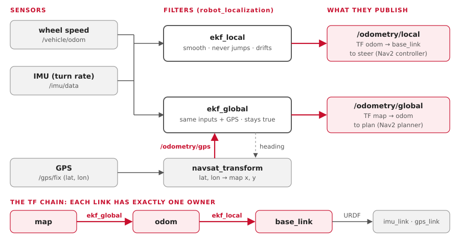
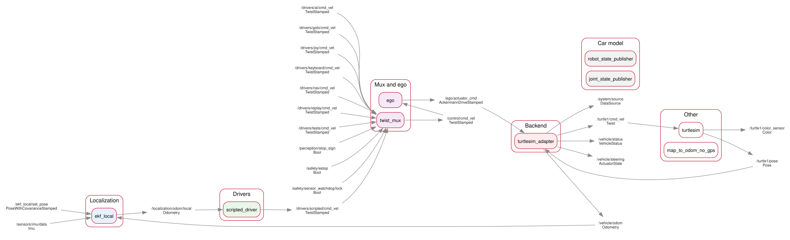
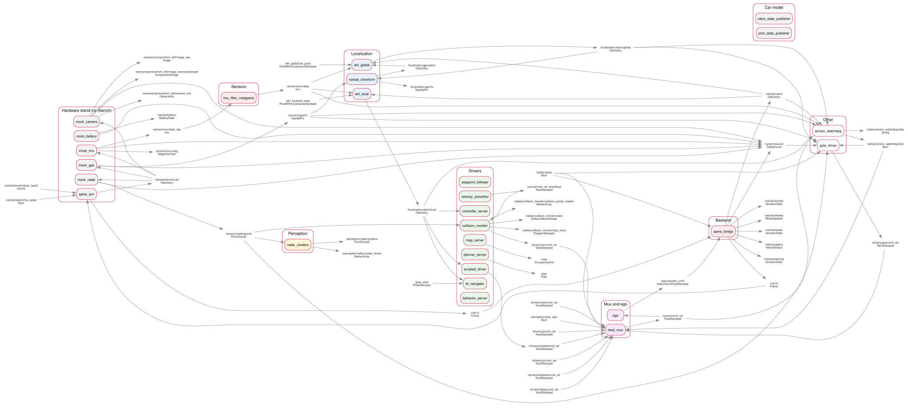
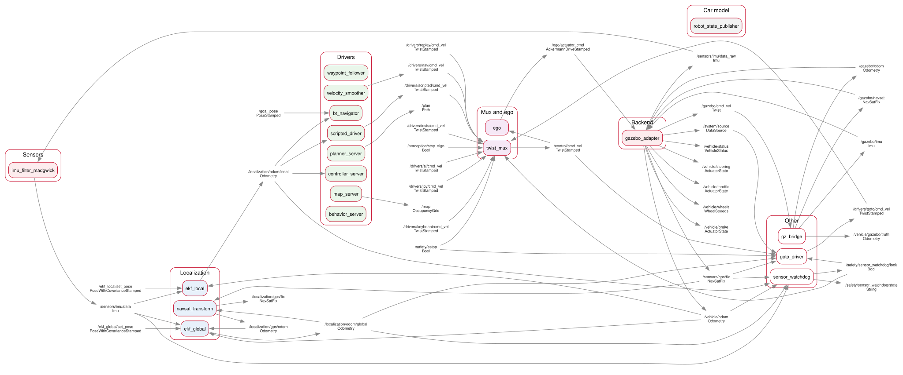

Everything flows one way: sensors, then "where am I", then drivers, the mux, ego, and one backend. The layers only talk through ROS topics, so any box can be swapped without touching the others.
The picture

1. Sensors: raw data
| Sensor | Driver | Publishes |
|---|---|---|
| Wheel speed | an Arduino on the Orin's CAN bus (0x200, 0x201), read by spine_bridge role:=sensors (Today's wiring) |
/vehicle/odom, /vehicle/wheels |
| IMU (Yahboom, USB) | aav_imu_yahboom (Rust), then the stock imu_filter_madgwick |
/sensors/imu/data_raw, then /sensors/imu/data |
| GPS (u-blox, USB) | the stock ublox_gps; or nmea_navsat_driver, or ublox_dgnss on the car |
/sensors/gps/fix |
| The car's shape | the stock robot_state_publisher, from vehicle.yaml |
/tf_static: where each sensor sits |
| Lidar (Velodyne VLP-16, roof) | the stock velodyne driver, on the Orin |
/sensors/lidar/points |
| Front cameras (the camera Pi) | MediaMTX on the Pi streams H.264; on the Orin one camera_stream_<camera> each decodes it and runs the detector inside (camera pipeline) |
/perception/detections: no raw pictures on the network |
Each driver publishes a standard message in its own frame. Another IMU or GPS can replace it without changing anything downstream.
2. Where am I: two filters

ekf_localfuses the wheels and the IMU. It's smooth and never jumps, but it drifts slowly, like counting your steps. Use it to steer.ekf_globalfuses the same inputs plus GPS. It stays near the truth, but can hop a little when a GPS fix arrives. Use it to plan.navsat_transformturns GPS latitude and longitude into map x and y forekf_global.
Does the global EKF read the local one?
In effect, yes. ekf_global publishes only the correction map → odom, worked out on
top of ekf_local's odom → base_link. Chained together, they give the car's true
position, and the local estimate stays smooth.
3. Drivers propose, the mux picks
Every driver publishes a TwistStamped (speed in m/s, turn rate in rad/s) on its own
topic. None of them knows what kind of vehicle it's driving.
| Driver | Topic | Priority |
|---|---|---|
| Joystick: the safety driver | /drivers/joy/cmd_vel |
100 |
| Keyboard, or another remote | /drivers/keyboard/cmd_vel |
90 |
| Actuator tests: measure the car (stages 3-4) | /drivers/tests/cmd_vel |
60 |
| Scripted: speed up, hold, slow down | /drivers/scripted/cmd_vel |
50 |
| Replay of a recorded drive | /drivers/replay/cmd_vel |
40 |
| Nav2: drive to a point on the map | /drivers/nav/cmd_vel |
20 |
| AI | /drivers/ai/cmd_vel |
10, later |
twist_mux passes on the highest priority that has spoken in the last 0.5 s, as
/control/cmd_vel. Publishing true on /safety/estop blocks every driver until someone publishes
false.
Teleop is just another driver. The keyboard's commands take the same path as Nav2's: mux, ego, then the turtle or the car.
4. ego: the virtual car
ego is the only node that knows the car is a car. Fifty times a second it turns /control/cmd_vel
into /ego/actuator_cmd: an AckermannDriveStamped with a speed and a steering angle
(positive is left).
| Step | What it does |
|---|---|
| Bicycle model | steering angle = atan(wheelbase × turn rate ÷ speed). A car can't turn on the spot, so at zero speed ego holds the wheels where they are. |
| Limits | 1.0 m/s top speed to start; acceleration; steering ±0.5 rad; steering rate |
| Timeout | no command for 0.3 s: brake to a stop |
5. One car model, everywhere
The car's numbers live in one file, src/aav_description/config/vehicle.yaml. The launch
files hand them to every part that needs them.
| Part | Uses |
|---|---|
| ego | the wheelbase and steering limit, for the bicycle model |
URDF (robot_state_publisher) |
where each sensor sits |
| Nav2 | the footprint, and the tightest turn: wheelbase ÷ tan(max steer) = 2.86 m |
turtlesim_adapter, gazebo_adapter |
the wheelbase, so the turtle and the simulated car turn like the car |
aav_spine, aav_legacy |
the wheelbase, track and wheel size |
Most of the numbers are still guesses: see Car numbers.
6. Backends: one plays the car
| Backend | Package | Does |
|---|---|---|
The car, today (actuators:=uart) |
aav_legacy |
legacy_uart_bridge on the Motor Pi: UART frames for the ESP32 |
The CAN spine, later (actuators:=can) |
aav_spine_bridge |
spine_bridge on the Orin: CAN frames for the spine firmware |
| turtlesim | aav_turtlesim |
the stock turtlesim, steered with the bicycle model |
| Gazebo | aav_gazebo |
a simulated car with an IMU and GPS, on the real car's topics |
| CARLA | aav_carla |
adapter ready, untested: needs the NVIDIA computer (CARLA) |
Each backend reports the car's speed back on /vehicle/odom. That closes the loop into
the EKFs. On today's car the UART link sends nothing back, so the wheel sensors on the
Orin's CAN bus do it.
The car's wiring, today
As Ben understands it (23 Oct; the hardware lead confirms). Details: The CAN plan.
┌──────────── Orin ────────────┐ Motor Pi
ego ─► output_mux ─/control/car/actuator_cmd─ network ─► legacy_uart_bridge ─UART─► ESP32
│ throttle
CAN ─► socket_can_receiver ─► spine_bridge role:=sensors ─► /vehicle/odom, steering
▲ (no sender) (sends nothing) /vehicle/wheels brake
└─ wheel sensors' Arduino (0x200, 0x201), and other sensors?The output mux: one target, and the real car only on real data
No backend reads /ego/actuator_cmd itself. The output mux (target:=) passes ego's
command on to its target's own topic, and the sensor mux (source:=) checks where
the data comes from. See Sources and targets.
ego ─/ego/actuator_cmd─► output_mux ─/control/car/actuator_cmd─► legacy_uart_bridge (today),
▲ or spine_bridge role spine
│ (only while every source is REAL; else silent, latched)
sensor_mux ────────┘ /system/sensor_mux/state7. Safety layers
From the person outward. Each layer works even if everything after it fails.
| # | Layer | Stops the car when |
|---|---|---|
| 1 | Joystick deadman (priority 100) | held with the sticks centred |
| 2 | /safety/estop |
it's true: the mux blocks every driver, and the car backends brake |
| 3 | ego's timeout | no command arrives for 0.3 s |
| 3a | The output mux | any source isn't REAL (a simulator, the bench, a replay on the network), or the sensor mux says no or goes quiet: it sends nothing, latched |
| 4 | The backend | ego is quiet: legacy_uart_bridge sends brake frames after 0.3 s; spine_bridge (CAN spine) stops sending drive frames after 0.1 s |
| 5 | The firmware's watchdog | no valid frame for 100 ms: throttle off, brake on. The Rust ESP32 firmware, on the UART link today, or the CAN spine |
| 6 | RC override switch, hardware e-stop, driver faults | always: handled in the firmware |
Two more, for the automatic drivers only (Nav2 and the AI slot; never a person or a test):
| Layer | Stops Nav2 when |
|---|---|
| collision_monitor | radar or lidar points in the stop zone just ahead; or the radar or lidar goes quiet for 1 s |
The sensor watchdog (aav_safety) |
the wheels, the IMU, the GPS or an EKF go quiet, send NaN or freeze; the GPS jumps; the wheels disagree with the IMU or the GPS; the HUD's screen freezes or dies (its heartbeat, on the car); a front camera's stream goes quiet (its detections, on the car); the watchdog itself goes quiet (fail-safe: twist_mux's lock times out). A twist_mux lock, shown on the HUD and the map window (simulation) |
Today's car has no layer 5
The 2025-26 ESP32 firmware has no timeout. If the bridge dies, the last throttle stays on. Keep the wheels off the ground and the e-stop in hand: see Firmware.
8. The real graph, three ways
The same layers, as they really run: pixi run graph-picture saved each one from a live
profile on Ben's Mac (20 Oct). Read them left to right. The middle stays the same in all
three; only the left edge (where the data comes from) and the right edge (who plays the
car) change.
| Profile | Nodes, topics | Look for |
|---|---|---|
pixi run turtle |
9, 23 | the whole command path on one line: scripted_driver → twist_mux → ego → turtlesim_adapter, and /vehicle/odom back into ekf_local |
pixi run bench |
27, 50 | the stand-ins on the left (mock_*, spine_sim); /vehicle/bench/truth feeding every mock; spine_bridge and spine_sim talking over /can/tx, /can/rx |
pixi run sim (empty world) |
19, 38 | no mocks: gz_bridge brings in /gazebo/imu and /gazebo/navsat, and gazebo_imu and gazebo_gps turn them into /sensors/... |
The turtle

Bench mode

Gazebo

The PNGs beside them (docs/img/graph-*.png) are for slides. To see it live: start a
profile, then pixi run graph.